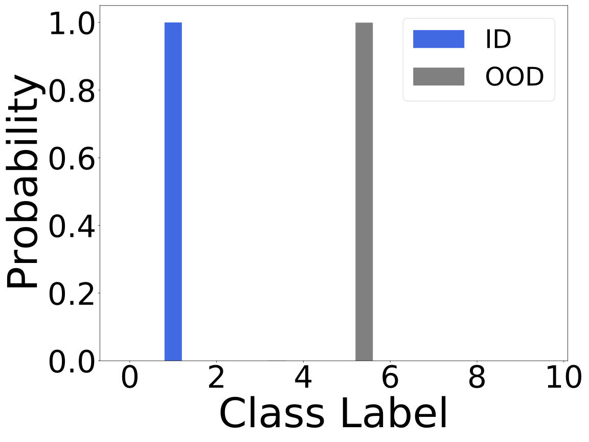
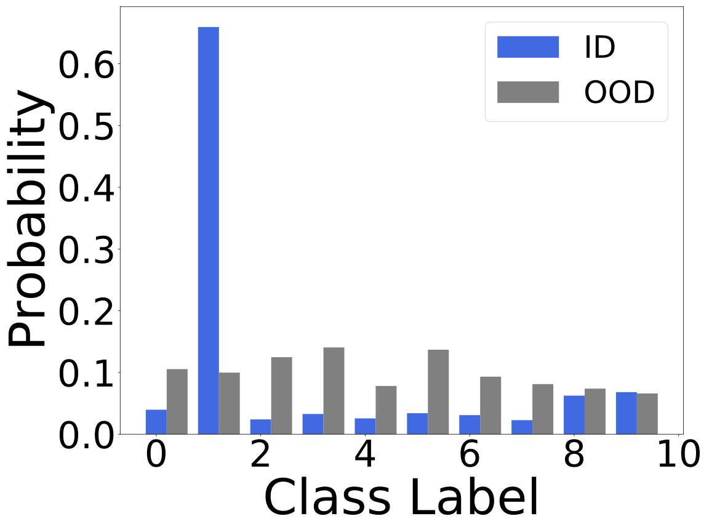

Information
- Title: Mitigating Neural Network Overconfidence with Logit Normalization
- Author: Hongxin Wei, Renchunzi Xie, Hao Cheng, Lei Feng, Bo An, Yixuan Li
- Institution: 新加坡南洋理工大学，南京大学，重庆大学
- Year: 2022
- Journal: ICML
- Source: Arxiv, GitHub
- Cite: Hongxin Wei, Renchunzi Xie, Hao Cheng, Lei Feng, Bo An, Yixuan Li Proceedings of the 39th International Conference on Machine Learning, PMLR 162:23631-23644, 2022.
- Idea: 提出了通过归一化 logit 的范数来使模型给出更保守的预测，使得 ID 数据更具有可分性。
1 | @article{wei2022logitnorm, |
Abstract
这篇文章关注的是分布外(OOD)数据的过度自信问题，即网络对于分布内数据与分布内数据的分类置信度都很高。作者提出了 LogitNorm 来缓解这个问题，其出发点是观察到训练过程中对数范数持续增加，而本质上是对于网络输出范数的解耦。
Introduction
区分分布内数据(ID)与分布外数据(OOD)对于网络安全是很有意义的，最简单的方法是使用最大 softmax 概率（MSP）也叫 softmax 置信度分数进行 OOD 检测。但网络很容易产生过度自信的预测，即对于一些离分布很远的数据也会给出很高的置信度。
作者提出通过对交叉熵损失做简单的修正就能缓解过度自信的问题，方法是对对数向量（softmax的前项输出）进行常数正则化。作者分析网络的对数向量，发现交叉熵损失会持续使得对数向量的范数变大，进而导致过度自信的问题。
作者的思路关键是通过将对数向量归一化为固定范数来解耦输出范数的影响及其优化目标，归一化后的输出倾向于给出保守的预测，使得 ID 与 OOD 具有良好的可分性。 作者的贡献有：
- 提出了一种简单有效的方法 LogitNorm 对交叉熵损失进行校正，将训练过程中的对数范数的影响解耦出来。实验验证了该方法能用于不同的网络结构并超过了已有的 OOD 检测方法。
- 进行了广泛的实验，效果很好
- 进行了消融实验并与已有方法进行对比。
Method
用 f(x; θ) 表示网络输出，即 logit，其可以分解为两个向量 f = ∥f∥ ⋅ f̂, 其中 $\|\boldsymbol{f}\| =\sqrt{\boldsymbol{f}_1^2 + \boldsymbol{f}_2^2 + \cdots + \boldsymbol{f}_k^2}$ 是 logit 向量 ∥f∥ 的欧式范数 f̂ 是与 f 相同方向的单位向量，两者分别表示 f 的大小和方向。
模型通过c = arg maxi(fi) 进行预测，有如下性质：
性质：对于给定常数 s > 1, 如果 arg maxi(fi) = c, 则 arg maxi(sfi) = c 总是成立。
基于此，logit 的大小 ∥f∥ 不会影响预测类别 c.
性质：用 σ 表示 softmax 激活函数，对于给定标量 s > 1，如果 c = arg maxi(fi)，则 σc(sf) ≥ σc(f) 成立。
据此可以发现大小 ∥f∥ 的增加会导致高的 softmax 置信度，但最终预测结果不变。 $$ \mathcal{L}_{\text{CE} }(f(\boldsymbol{x};{\theta}),y) = -\log p(y|\boldsymbol{x}) = - \log \frac{e^{\|\boldsymbol{f}\| \cdot {\hat{f}_y} }}{\sum^{k}_{i=1}e^{\|\boldsymbol{f}\| \cdot {\hat{f}_i} }}. $$ 由上式可知，训练损失取决于大小 ∥f∥ 和方向 f̂。保持方向不变考虑大小对训练损失的影响：当 y = arg maxi(fi)，可以发现增加 ∥f∥ 会导致 p(y|x) 的增加，这表示对于已经正确分类的有安保，优化损失会增大 ∥f∥ 来降低损失并导致更高的置信度。
上图展示了训练期间 logit 的范数变化，交叉熵损失会鼓励较大范数的 logits 使其具有过度自信的softmax分数。
根据上面的分析，作者提出将 logits 大小与网络优化解耦，即保持训练期间 logits 的 L2 范数是一个常数，即： $$ \begin{align*} &\text{minimize} \quad \mathbb{E}_{\mathcal{P}_{\mathcal{X}\mathcal{Y} }}\left[\mathcal{L}_{\text{CE} }\left(f(\boldsymbol{x} ; {\theta}), y\right)\right] \\ &\text{subject to} \quad \left\|f(\boldsymbol{x} ; {\theta})\right\|_{2}=\alpha. \end{align*} $$ 但简单的拉格朗日乘数法并不好，作者提出将目标转换为可用于端到端训练的替代损失函数，使其具有严格固定的向量范数。 ℛℒ(f) = 𝔼(x, y) ∼ 𝒫𝒳𝒴[ℒCE(f̂(x; θ), y)], 其中 f̂(x; θ) = f(x; θ)/∥f(x; θ)∥ 是归一化的 logit 向量。分母会添加一个小的正数保持数值稳定，新的损失函数可以定义为： $$ \mathcal{L}_{\text{logit\_norm} }({f}(\boldsymbol{x};\theta),y) = - \log \frac{e^{ {f}_y/(\tau \|\boldsymbol{f}\|)} }{\sum^{k}_{i=1} e^{f_{i}/(\tau \|\boldsymbol{f}\|)} }, $$ 其中温度参数 τ 调整 logits 的大小，该损失函数可以具有“输入依赖”的温度 τ‖f(x; θ)‖。
通过 logit 归一化，输出向量的大小严格固定为 1/τ。最小化损失只能调整输出的方向来实现，使得分布内与分布外的样本更容易区分：
 
下面给出这个新损失函数的下界：
性质：对于任意输入 x 和任意正数 τ ∈ ℝ+ ，logit norm 的损失有下界 ℒlogit_norm ≥ log (1 + (k − 1)e−2/τ)，其中 k 是类别数量。
可以注意到 LogitNorm 损失下界取决于 τ 和 k，可以取一个较小的 tau < 1。
Experiment
其他实验和分析有兴趣可以看看原文
Conclusion
作者介绍了 Logit 归一化 (LogitNorm)，这是交叉熵损失的一种简单替代方法，可增强许多现有的 OOD 检测事后方法。通过将 Logits 范数的影响与训练目标及其优化解耦，该模型倾向于对 OOD 输入给出保守的预测，从而与 ID 数据具有更强的可分离性。大量实验表明，LogitNorm 可以提高 OOD 检测和置信度校准，同时保持 ID 数据的分类准确性。该方法在实际应用中很容易采用。它可以直接使用现有的深度学习框架来实现，并且不需要对损失或训练方案进行复杂的更改。
如有错漏，欢迎指正！如果对你有帮助的话，请给我点个赞吧~
欢迎前往 我的博客 查看更多笔记